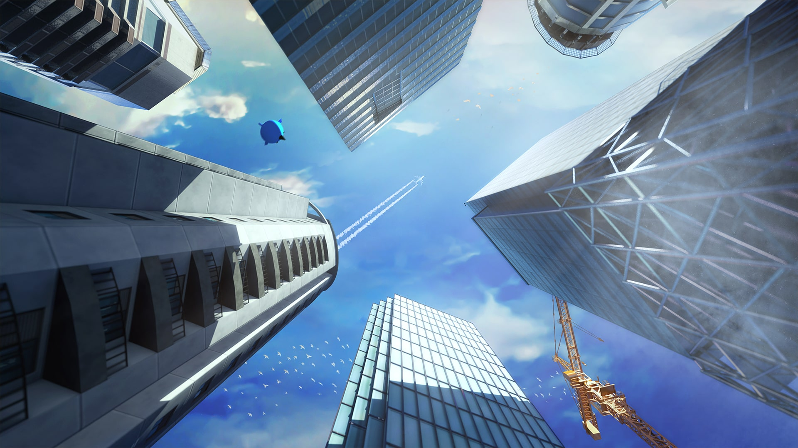

I created the launch trailer for the PSVR2 version of the game.
All gameplay was recorded in the VR headset.
The in-game city was built by one of the developers.
I created the cinematic captions in Unreal Engine 5, using buildings and textures from the game.
I created & rendered the key art in Cinema 4D using the game assets, which are very low-poly / low-res.
The paintover was done in Photoshop.
For the logo I had to use the original "Cities" part, so it was just a matter of coming up with the "VR" part.
The shape is loosely based on a VR-headset.
I made a wallpaper for launch, also created with game assets in Cinema 4D and Photoshop.
The blue bird-thing is the mascot of the game.

I also made it as a poster, included in our gift boxes.